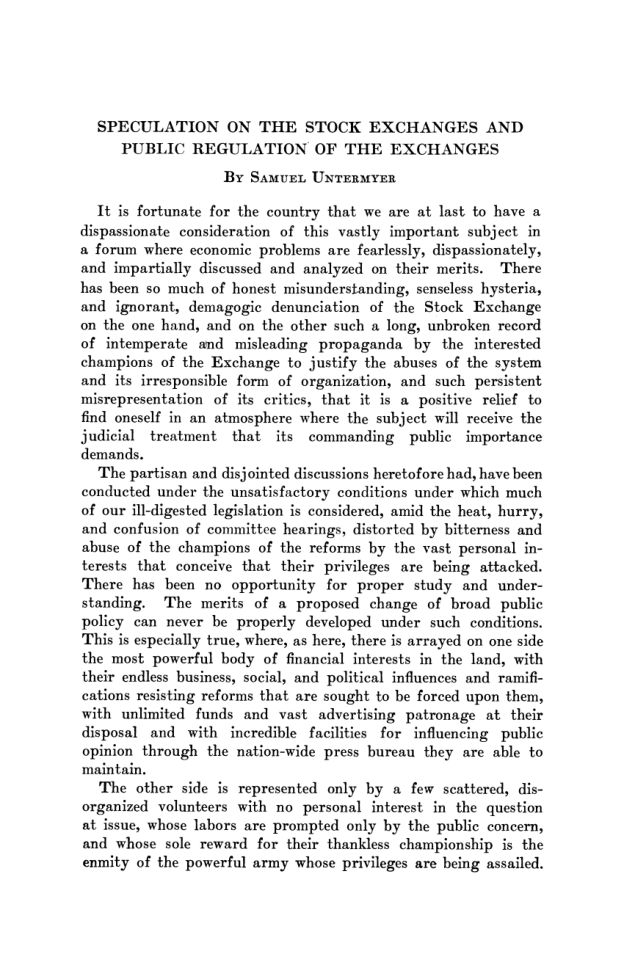

Princeton, 1914: direito e propriedade, a bolsa em debate e o mercado
Leitura: 5 min
Princeton, dezembro de 1914: Gray diz que os tribunais não podem congelar a propriedade, Untermyer e Emery divergem sobre regular a bolsa, e a reunião discute mercados, estatísticas, impostos e salários.


Na noite de 28 de dezembro de 1914, em Princeton, três presidentes de associações científicas falaram na mesma sessão, presidida por John Grier Hibben, presidente da Princeton University. John Koren, da American Statistical Association, tratou de ideais estatísticos; Edward A. Ross, da American Sociological Society, da livre comunicação. John H. Gray, da University of Minnesota, presidente da American Economic Association, disse aos economistas que o sistema jurídico americano ainda tratava a concorrência e a liberdade de contrato como se o país fosse uma sociedade pioneira, com terra livre e igualdade de riqueza.
O suplemento de março de 1915 reúne os textos e debates dessa vigésima sétima reunião anual, de 28 a 31 de dezembro de 1914. Houve sessões sobre a especulação nas bolsas, a distribuição de mercadorias, o trabalho estatístico do governo federal, a educação e a eficiência industrial, os impostos de renda e de herança e a regulação pública dos salários. A sessão de estatística foi conjunta com a American Statistical Association, e a de salários, com a American Sociological Society.
O que Gray pedia à economia?
Gray sustenta que a concorrência só é benéfica entre partes de poder de barganha equivalente e que, nos Estados Unidos, a interpretação constitucional deixou aos tribunais a definição da política pública e, com ela, do conteúdo da propriedade. Pela história de casos como Dartmouth College, Charles River Bridge e Dred Scott, conclui que nenhuma forma jurídica mantém por muito tempo um tipo de propriedade contra a opinião pública consolidada, e que o Estado precisa de um objetivo social definido. O discurso tem página própria.
Por que a bolsa de valores dividiu a sessão principal?
Samuel Untermyer, advogado de Nova York, defendeu a regulação federal da New York Stock Exchange, associação sem personalidade jurídica cujas decisões sobre membros, listagem e cotações não estavam sujeitas a revisão judicial. Henry C. Emery, de Yale, respondeu que o problema era confundir os especuladores com os corretores que executam suas ordens, e que o fechamento da bolsa por mais de três meses, com a guerra, mostrara o valor de um mercado aberto. William C. Van Antwerp, do conselho da bolsa, rebateu Untermyer ponto por ponto. O debate também tem página própria.
Que outros temas ocuparam a reunião?
Royal Meeker, comissário de estatísticas do trabalho, e L. D. H. Weld, da University of Minnesota, concordaram que o intermediário não pode ser eliminado, só sua função reorganizada; Weld calculou que o produtor de Minnesota recebia 69% do preço de varejo dos ovos e 45% do dos frangos. Na sessão de estatística, economistas pediram dados anuais de indústria e agricultura e uma comissão federal de estatística. T. S. Adams, da comissão tributária de Wisconsin, defendeu os impostos de renda e de herança mais como fonte de receita do que como reforma social. Frank Haigh Dixon propôs investigação obrigatória antes de greves ferroviárias, e Mrs. Glendower Evans relatou o primeiro salário mínimo fixado em Massachusetts.
Que decisões a associação tomou?
A assembleia elegeu Walter F. Willcox presidente para 1915 e aprovou duas reuniões no ano seguinte: uma em San Francisco, na segunda semana de agosto, e outra no fim de dezembro. Criou uma comissão de cinco membros sobre o trabalho estatístico federal e manteve a comissão sobre liberdade acadêmica, que apresentou relatório preliminar. O tesoureiro registrou superávit de US$ 669,23 no ano.
Na minha leitura
Na minha leitura, o volume gira em torno de uma pergunta de método: quem deve produzir a informação sobre a qual se decide. Untermyer quer inspeção pública dos livros dos corretores; Emery confia no preço formado pelo mercado aberto; Weld pede pesquisa sobre o custo de cada etapa da distribuição; os estatísticos querem séries contínuas e comparáveis; Dixon quer que investigadores permanentes apresentem os fatos antes de uma greve.
O discurso de Gray leva a mesma questão ao direito. Se a política pública define o conteúdo da propriedade, a escolha entre tribunal e legislatura é também uma escolha sobre quem processa a informação econômica relevante. É um argumento institucional, apresentado como diagnóstico histórico.
Glossário
- Poder de polícia
- poder do Estado de restringir direitos de propriedade e contrato em nome da saúde, segurança e bem-estar públicos.
- Liberdade de contrato
- doutrina de que as partes adultas podem pactuar livremente, com pouca interferência do Estado.
- Venda a descoberto
- venda de ações que o vendedor não possui, para recomprá-las mais baratas.
- Manipulação
- compras e vendas feitas para criar aparência de atividade ou mover o preço, não por investimento.
- Curb Market
- mercado de títulos de Nova York que funcionava na rua, separado da bolsa.
- Jobber
- atacadista que compra em lotes do recebedor e revende, em pequenas quantidades, ao varejo.
- Investigação obrigatória
- exame público de um conflito trabalhista antes que greve ou locaute sejam permitidos.
- Wage board
- conselho com empregadores, empregados e público que propõe o salário mínimo de uma indústria.
Artigos (20)
- Economics and the Law: Annual Address of the President — John H. Gray, University of Minnesota; discurso presidencial (pp. 3–23). Gray sustenta que a economia passou a se ocupar do bem-estar humano, e não só do ganho privado, mas o direito americano continuava fiel às doutrinas de concorrência, propriedade privada e liberdade de contrato formadas numa sociedade de produtores independentes e terra livre. A concorrência só é benéfica entre partes de poder de barganha semelhante, e o capital fixo, que impede o concorrente ineficiente de sair sem grande perda, limita ainda mais seu alcance. Pela história constitucional, do caso Dartmouth College à Charles River Bridge, de Chisholm v. Georgia a Dred Scott e Lochner, argumenta que os tribunais tomaram para si a definição da política pública e, portanto, do conteúdo da propriedade, e que isso não impede a mudança, apenas a adia. Com os recursos naturais apropriados, a participação das mulheres no trabalho remunerado em alta e os salários reais em queda desde 1906, prevê que a barganha individual dará lugar a arranjos com salário mínimo, participação na direção e nos lucros. Propõe que o Estado tenha um objetivo social e que ninguém use a propriedade de modo prejudicial ao interesse permanente da sociedade. JSTOR · ler o comentário
- Speculation on the Stock Exchanges and Public Regulation of the Exchanges — Samuel Untermyer, Nova York (pp. 24–68). Untermyer, autor do projeto de regulação das bolsas em tramitação no Congresso, considera a bolsa uma necessidade pública, mas critica sua forma de organização: uma associação sem personalidade jurídica, limitada a 1.100 membros, que expulsa sócios, fixa comissões uniformes, pune quem negocia com bolsas rivais, decide a listagem de títulos e controla a transmissão das cotações pela Western Union, sem revisão judicial. O fechamento de julho de 1914 mostrou, para ele, o perigo de deixar decisões tão amplas a cidadãos privados, enquanto as bolsas de Londres, da França, da Alemanha e de Amsterdã estavam sob controle governamental. Com base nos dados do Comitê Pujo, afirma que a manipulação de preços e as vendas a descoberto formaram parte importante dos negócios. Propõe proibir o empréstimo de ações dos clientes para vendas a descoberto, exigir a entrega física dos certificados na câmara de compensação, abrir os livros dos corretores a uma autoridade pública e condicionar a listagem à divulgação completa das empresas, por meio do controle federal sobre os correios. Responde também às críticas de Van Antwerp sobre as audiências no Senado. JSTOR · ler o comentário
- Speculation on the Stock Exchanges and Public Regulation of the Exchanges — Henry C. Emery, Yale University (pp. 69–85). Emery, que vinte anos antes escrevera contra as leis de futuros de grãos, mantém a posição. Lembra que a lei alemã de 1896 contra a especulação em ações foi revogada dez anos depois, com o reconhecimento de que produzira o contrário do pretendido, e elogia a Hughes Commission por não recomendar legislação radical. O erro central dos reformadores seria confundir a especulação, praticada por um grande público, com a bolsa, que é apenas um corpo de corretores agindo como agentes. Critica a monografia de A. A. Osborne por cobrar da bolsa funções que os economistas atribuíam à especulação em geral: dirigir o capital, descontar o futuro e assumir riscos. Compara os preços a um cata-vento, que mostra como o vento sopra agora. Argumenta que os corretores não distinguem ordens de investimento e de especulação, que o projeto federal afastaria emissões da bolsa e que a manipulação foi exagerada. O fechamento de mais de três meses provaria o valor do mercado aberto. Admite um representante do governo no conselho da bolsa. JSTOR · ler o comentário
- Speculation on the Stock Exchanges--Discussion — Albert W. Atwood, Walter E. Lagerquist, Arthur Richmond Marsh, Joseph H. Underwood, William C. Van Antwerp e W. Z. Ripley (pp. 86–111). Atwood atribui as grandes variações de preço a mudanças no valor das empresas. Lagerquist propõe regular as empresas, não o mercado. Marsh rejeita o controle governamental e a supervisão pelo Postmaster General. Underwood sugere representantes do governo no conselho da bolsa. Van Antwerp, governador da bolsa, nega que Untermyer tenha provado a manipulação, lembra que ela já era crime em Nova York e cita as regras de 1913 contra manipulação e margens insuficientes. Ripley lembra que admitir e excluir títulos da lista afeta diretamente o público e defende publicidade completa e imparcial sobre a promoção e a situação financeira das empresas listadas. JSTOR · ler o comentário
- Market Distribution — Royal Meeker, comissário de estatísticas do trabalho (pp. 112–124). Meeker parte da alta do custo de vida e da tendência do público a culpar ferrovias e intermediários. Sustenta que a função do intermediário não pode ser eliminada, só transferida, e que a maioria dos prejuízos dos agricultores com comissários não vem de fraude, mas de falta de coordenação: num dia de agosto, 58 vagões de pêssegos chegaram a St. Louis, que absorvia uns 14 ou 15 por dia, e o consumidor pagava de US$ 1,60 a US$ 2,00 pelo alqueire de maçãs ruins quando o produtor recebia de 14 a 17 centavos pelas de primeira. A saída seria a organização do mercado: cooperativas de agricultores para escolher, padronizar e embarcar a produção, cerca de 500 já existentes, e serviços de transporte voltados ao público. Critica o frete cruzado e propõe, para alimentos importantes, tarifas pelo princípio postal, independente da distância. Vê nos quatro mercados públicos abertos em Nova York em 1914 um bom exemplo, se bem supervisionados, e duvida que a encomenda postal reduza preços de modo apreciável. JSTOR
- Market Distribution — L. D. H. Weld, University of Minnesota (pp. 125–139). Weld define a comercialização como parte da produção, criadora de utilidades de tempo, lugar e posse, e acusa os economistas de terem negligenciado o tema. Aplica ao comércio o princípio da divisão do trabalho: o embarcador local junta pequenas entregas em vagões, o recebedor atacadista financia e armazena, e o jobber vende aos poucos ao varejo e lhe dá crédito, como na manteiga das 800 cooperativas de Minnesota vendida em Nova York. Por isso, mais intermediários podem baratear a distribuição, e o custo não depende do número de etapas, mas das características do produto: perecibilidade, regularidade da oferta, perdas e volume. Em Minneapolis, em fevereiro de 1914, o produtor recebia 69% do preço de varejo dos ovos, 61% dos perus, 55% das batatas e 45% dos frangos; o produtor de melão da Califórnia, menos de 20% do preço em Nova York. Entre os remédios, cita cooperação, padronização, regulação estadual e educação, e considera os mercados públicos e a venda direta pelo correio de alcance pequeno. JSTOR
- Market Distribution--Discussion — G. N. Lauman, Selden O. Martin, Arthur E. Swanson, Clyde L. King, J. Russell Smith, Henry C. Emery e John Lee Coulter (pp. 140–161). Lauman e Swanson contestam a tarifa postal de Meeker; Swanson lembra que o transporte leva de 5 a 7 centavos do dólar do consumidor e os intermediários, de 40 a 45. Martin descreve o curso de marketing de Harvard. King defende a padronização de produtos e embalagens. Smith vê futuro na encomenda postal. Emery diz que a teoria do preço explica mal a margem entre produtor e consumidor. Coulter, que estudava o tema havia dez anos, alerta para a grande variação do custo de comercializar o mesmo produto ao longo do ano. JSTOR
- The Statistical Work of the United States Government — Walter F. Willcox, E. Dana Durand, Royal Meeker, Wesley C. Mitchell, Walter S. Gifford, Harvey S. Chase, Roger W. Babson, John Cummings, Joseph A. Hill e N. I. Stone (pp. 162–208). Primeira sessão conjunta da associação com a American Statistical Association. Willcox lembra o memorial que as duas enviaram ao Congresso, mais de dezoito anos antes, a favor de um Census Bureau permanente. Durand pede estatísticas anuais de indústria e agricultura e critica as estimativas do Departamento de Agricultura, que somam a cada ano palpites de variação sobre o último censo. Meeker explica que o novo índice de preços por atacado iria até 1890, mas o de varejo só até 1907, porque os preços anteriores não eram comparáveis. Mitchell, como usuário, acha a coleta de dados de preços e salários melhor que o trabalho de escritório que produz os boletins. Gifford lembra que novos órgãos, como o Federal Reserve Board e a Trade Commission, dependerão de estatísticas. Chase e Babson defendem padrões internacionais para contas públicas e censos. Cummings descreve o levantamento cooperativo de indústrias e escolas de Richmond. Hill propõe uma comissão federal de estatística criada por lei, e Stone critica a falta de formação técnica dos estatísticos do governo. JSTOR
- The Relation of Education to Industrial Efficiency: The Study of the General Principles of Administration — Edward D. Jones, University of Michigan (pp. 209–226). Jones parte da desigualdade de poder econômico: a maioria passou a receber ordens a vida toda, e surgiu uma liderança econômica que a sociedade precisa tornar confiável. Cita a mensagem de Lincoln de 1862, segundo a qual o assalariado prudente podia tornar-se independente, para mostrar como essa expectativa perdeu força. As universidades foram chamadas a formar líderes de negócios, mas seus cursos técnicos ficam no plano da técnica, os culturais não se ligam à vida profissional e a economia se concentra na distribuição da renda, como se a pergunta fosse apenas quanto cabe a cada um. Jones propõe tratar a indústria como relação entre pessoas e o executivo como líder de homens, e criar um estudo dos princípios gerais de administração com base na literatura sobre liderança: estadistas, Maquiavel e seus comentadores, os tratados militares, como Da guerra, de Clausewitz, e autores como Ruskin e Morris, sobre o prazer no trabalho. O objetivo é que o futuro administrador veja o processo de produção, e não só o resultado. JSTOR
- Education and Industrial Efficiency--Discussion — H. L. Gantt e Isaac A. Loos (pp. 227–233). Gantt elogia o artigo por mostrar que há princípios gerais de administração e por destacar a liderança, e compara a direção industrial ao comando militar, com a frase de Napoleão de que o general é tudo. Loos pede que a literatura proposta seja muito reduzida, que se acrescentem contabilidade e estatística como disciplinas corretivas e que os princípios militares sejam muito modificados antes de aplicados à indústria. Para ele, liderança e administração devem ser distinguidas, tanto na guerra quanto nos negócios. JSTOR
- Effect of Income and Inheritance Taxes on the Distribution of Wealth — T. S. Adams, Wisconsin State Tax Commission (pp. 234–244). Adams mostra que os dois impostos recaem sobre os ricos: o imposto de renda federal teve 357.598 declarações, e 1.598 pessoas com renda acima de US$ 100.000 pagaram mais de 40% do total; em Wisconsin, 667 contribuintes acima de US$ 10.000 responderam por 48%. Critica o imposto federal como imposto de classe, que estimula o gasto público, e defende estendê-lo a todos com renda acima do padrão de vida americano. Considera que alíquotas acima de cerca de 10% não seriam cumpridas e que o imposto é fraco para reduzir grandes fortunas; sua virtude é fiscal. Como substituto do imposto sobre a propriedade pessoal das empresas, que pune empreendimentos novos e marginais, o imposto de renda faz do Estado um sócio, não um credor preferencial. Os dados de Wisconsin mostram pouco peso sobre agricultores e operários e mais sobre profissionais liberais e rentistas. Sobre heranças, prefere 10% ou 12% factíveis a 50% que levariam à evasão, e conclui que, para um governo perdulário, nenhum imposto novo é bom. JSTOR
- Public Regulation of Railway Wages — Frank Haigh Dixon, Dartmouth College (pp. 245–269). Dixon parte da frase dos árbitros do conflito dos maquinistas de 1912: os serviços públicos não podem depender das decisões de um grupo de empregadores ou empregados. As ferrovias tinham perto de dois milhões de empregados, e os salários consumiam 45% da receita bruta e quase 65% das despesas de operação. Descreve as quatro irmandades do serviço de trens, de maquinistas, condutores, foguistas e guarda-freios, menos de um quinto do total de empregados mas o núcleo da negociação coletiva, e a evolução da mediação federal desde a lei Erdman, de 1898, que ficou quase sem uso até o fim de 1906. Mostra que os aumentos concedidos por arbitragem acabam pressionando as tarifas, e que a Interstate Commerce Commission não aceitava elevar tarifas para compensá-los. Propõe adotar o princípio da lei canadense de disputas industriais: greve e locaute proibidos até que um corpo permanente de investigadores apartidários examine e publique os fatos, como a produtividade, os riscos e a comparação com outros ofícios. JSTOR
- The Social Aspects of the Public Regulation of Wages — Mrs. Glendower Evans, Boston (pp. 270–277). Evans relata a primeira aplicação da lei de salário mínimo de Massachusetts, que funciona por conselhos de salários com empregadores, empregados e representantes do público. A indústria de escovas foi escolhida por ser pequena e pagar mal: dos registros de 837 mulheres em 32 estabelecimentos, mais de um quarto trabalhava em média menos de 42 horas por semana. O conselho estimou item por item o custo de vida de uma mulher independente; a cifra superava o salário de mais de 90% das trabalhadoras. Os empregadores ofereceram 14 centavos por hora e quase todos aceitaram 15,5; os demais membros queriam 18 até o fim do ano. A comissão decretou 15,5 centavos, com 65% para aprendizes, a partir de 15 de agosto de 1914, e a inspeção encontrou só 16 pessoas abaixo do piso. Mesmo com 50 horas semanais, o mínimo daria US$ 7,75, quase US$ 1 abaixo do custo de vida estimado. Com dados federais e estaduais, Evans contesta a ideia de que as mulheres trabalham por complemento de renda. JSTOR
- Public Regulation of Wages--Discussion — Frank Julian Warne, H. B. Woolston, Theresa S. McMahon, W. L. Whittlesey, Scott Nearing e N. I. Stone (pp. 278–299). Warne responde a Dixon. Woolston pede que se considerem também os recursos dos empregadores. McMahon descreve a aplicação do salário mínimo no estado de Washington, de US$ 10 por semana para adultas no comércio. Whittlesey reflete sobre a dependência histórica de trabalho mal pago. Nearing propõe cobrar o custo do salário mínimo de juros e dividendos. Stone atribui a oposição da American Federation of Labor ao salário mínimo legal à confusão entre o mínimo de subsistência fixado por lei e o salário-padrão buscado pelos sindicatos. JSTOR
- Minutes of Business Meetings at Princeton — Atas das reuniões administrativas (pp. 300–304). Atas das reuniões de 29 a 31 de dezembro: eleição de Walter F. Willcox para presidente, aprovação de duas reuniões em 1915, criação da comissão sobre o trabalho estatístico federal e recebimento do relatório preliminar sobre liberdade acadêmica. JSTOR
- Report of the Secretary for the Year Ending December 17, 1914 — Allyn A. Young, secretário (pp. 305–307). O secretário relata a reunião da comissão executiva de maio de 1914, que decidiu realizar a reunião de 1915 em San Francisco, durante a exposição, na primeira semana de setembro, data que os sócios da costa do Pacífico depois pediram para antecipar. Registra também a carta enviada ao presidente da República pedindo representação oficial, paga pelo governo, em congressos internacionais de economia, sociologia, política e estatística; o Departamento de Estado respondeu que a associação deveria tomar a iniciativa de pedir a lei ao Congresso. No ano, a associação ganhou 238 sócios e 56 assinantes e terminou com 2.469 sócios e assinantes, perda líquida de 44. Desse total, 2.060 pagavam anuidade, 81 eram vitalícios, 8 honorários e 320 assinantes. A perda é atribuída em parte ao aumento da anuidade de US$ 3 para US$ 5, que no ano anterior provocara perda líquida de 202. O secretário observa que a filiação dobrou entre 1910 e 1912, que as desistências cresceram com ela e que o novo Handbook traz um índice geográfico de sócios. Lista dezessete sócios mortos no ano, entre eles Eugen von Böhm-Bawerk e George Westinghouse. JSTOR
- Report of the Treasurer for the Year Ending December 17, 1914 — Allyn A. Young, secretário-tesoureiro (pp. 308–310). O relatório apresenta duas contas. A de caixa parte de US$ 4.005,94 em dezembro de 1913 e registra receitas de US$ 12.228,64, das quais US$ 9.683,72 em anuidades e US$ 1.487,37 em assinaturas, e despesas de US$ 11.044,66, com US$ 7.288,65 para a American Economic Review. A associação comprou títulos da United Fruit Company por US$ 1.904,50 e terminou com US$ 3.285,42 em caixa. A conta de resultado, que inclui contas ainda não pagas e receitas ainda não realizadas, mostra superávit de US$ 669,23 no ano, apesar do aumento das despesas de publicação e da secretaria. Com investimentos de US$ 3.000 e uma conta de poupança grande, o tesoureiro conclui que a associação está em situação financeira sólida e que o aumento da anuidade se justificou. Não apresenta estimativa detalhada para 1915, prevê receitas semelhantes e adverte que a reunião de San Francisco deve custar mais que as habituais e talvez exija usar parte do excedente acumulado. Agradece a Donald English, presidente da comissão de auditoria, pelas sugestões para melhorar a contabilidade. JSTOR
- Report of the Auditing Committee — Donald English, Abbott Payson Usher e Roy G. Blakey (pp. 311–312). A comissão de auditoria, formada por Donald English, Abbott Payson Usher e Roy G. Blakey, certifica em Ithaca, em 21 de dezembro de 1914, que as contas do secretário-tesoureiro do exercício encerrado em 17 de dezembro foram examinadas em detalhe por assistentes sob sua direção e que os registros conferem com o balanço. O balanço soma US$ 8.558,28 de ativos, entre eles US$ 3.156,79 numa conta de poupança, investimentos de US$ 3.000 em títulos da cidade de Nova York e da United Fruit Company e US$ 1.757,00 de anuidades a receber. Do lado do passivo, há US$ 762,07 de contas a pagar, reservas para anuidades e contas incobráveis e um excedente de US$ 6.997,96. A conta de excedente mostra os ajustes por anuidades em atraso e contas incobráveis, o superávit de US$ 669,23 do ano e um desconto em títulos. A demonstração de receitas e despesas separa a receita ordinária, sobretudo de anuidades, do custo das publicações, que superou em mais de US$ 6.000 a receita de assinaturas e vendas. JSTOR
- Report of the Managing Editor of the American Economic Review for the Year Ending December, 1914 — Davis R. Dewey, editor-gerente (pp. 313–315). Dewey informa que a revista manteve a mesma linha dos anos anteriores e tentou padronizar a distribuição do conteúdo entre artigos principais, resenhas, notas sobre documentos, resumos de periódicos e notas. Para não passar de mil páginas, o quarto volume foi reduzido a 1.030, contra 1.078 no ano anterior. Foram publicados 20 artigos principais; 51 novos resenhistas se somaram à equipe, que chegou a 277 desde a criação da revista. Houve mudanças nos resumos de periódicos: um colaborador deixou o tema de preços e assumiu seguros e pensões, outros se afastaram, e R. E. Heilman, da University of Illinois, passou a cuidar dos serviços públicos. O custo da revista foi de US$ 7.531,34, US$ 126,79 a mais que no ano anterior, por causa de mais trabalho de escritório e da compra de uma máquina de escrever. As tabelas anexas mostram, de 1911 a 1914, o número de páginas e de itens por seção: os livros listados passaram de 785 para 1.575 e os resumos de periódicos, de 1.074 para 2.021. JSTOR
- Preliminary Report of the Joint Committee on Academic Freedom and Academic Tenure — Comissão conjunta presidida por Edwin R. A. Seligman (pp. 316–323). A comissão, formada por representantes da American Economic Association, da American Political Science Association e da American Sociological Society, apresenta só um relatório preliminar, pela complexidade do tema. Diz que sua função não é a de um sindicato de professores, mas a de mostrar a importância pública da liberdade acadêmica para a ciência, os estudantes, os curadores, os reitores e a comunidade. Considera indiscutível a liberdade de pesquisa e concentra-se na liberdade de expressão, cujo risco, antes teológico, se deslocara para a economia e as ciências sociais; nas instituições privadas, a pressão viria de interesses conservadores, e nas estaduais, de considerações políticas. Formula perguntas sobre a diferença entre faculdades e universidades, entre ensino básico e avançado, entre falas em aula e em público e sobre o modo de expressão. Opõe a visão do professor como empregado privado, demissível a qualquer tempo, à do cargo quase público com estabilidade, e pergunta sobre demissão, pensão, julgamento e razões públicas. Pede para continuar e apresentar relatório final no ano seguinte. JSTOR
Documentos, periódicos e notas (1)
- Program of Twenty-Seventh Annual Meeting — Programa da reunião (pp. 1–2). Programa da reunião de Princeton, de 28 a 31 de dezembro de 1914, com seis sessões: os discursos dos presidentes das três associações, a especulação nas bolsas, a distribuição de mercadorias, o trabalho estatístico do governo federal em sessão conjunta com a American Statistical Association, educação e eficiência industrial com os impostos de renda e herança, e a regulação dos salários em sessão conjunta com a American Sociological Society. JSTOR
Fontes
- Program of Twenty-Seventh Annual Meeting (pp. 1–2). JSTOR · Internet Archive (PDF)
- Economics and the Law: Annual Address of the President (pp. 3–23). JSTOR · Internet Archive (PDF)
- Speculation on the Stock Exchanges and Public Regulation of the Exchanges (pp. 24–68). JSTOR · Internet Archive (PDF)
- Speculation on the Stock Exchanges and Public Regulation of the Exchanges (pp. 69–85). JSTOR · Internet Archive (PDF)
- Speculation on the Stock Exchanges--Discussion (pp. 86–111). JSTOR · Internet Archive (PDF)
- Market Distribution (pp. 112–124). JSTOR · Internet Archive (PDF)
- Market Distribution (pp. 125–139). JSTOR · Internet Archive (PDF)
- Market Distribution--Discussion (pp. 140–161). JSTOR · Internet Archive (PDF)
- The Statistical Work of the United States Government (pp. 162–208). JSTOR · Internet Archive (PDF)
- The Relation of Education to Industrial Efficiency: The Study of the General Principles of Administration (pp. 209–226). JSTOR · Internet Archive (PDF)
- Education and Industrial Efficiency--Discussion (pp. 227–233). JSTOR · Internet Archive (PDF)
- Effect of Income and Inheritance Taxes on the Distribution of Wealth (pp. 234–244). JSTOR · Internet Archive (PDF)
- Public Regulation of Railway Wages (pp. 245–269). JSTOR · Internet Archive (PDF)
- The Social Aspects of the Public Regulation of Wages (pp. 270–277). JSTOR · Internet Archive (PDF)
- Public Regulation of Wages--Discussion (pp. 278–299). JSTOR · Internet Archive (PDF)
- Minutes of Business Meetings at Princeton (pp. 300–304). JSTOR · Internet Archive (PDF)
- Report of the Secretary for the Year Ending December 17, 1914 (pp. 305–307). JSTOR · Internet Archive (PDF)
- Report of the Treasurer for the Year Ending December 17, 1914 (pp. 308–310). JSTOR · Internet Archive (PDF)
- Report of the Auditing Committee (pp. 311–312). JSTOR · Internet Archive (PDF)
- Report of the Managing Editor of the American Economic Review for the Year Ending December, 1914 (pp. 313–315). JSTOR · Internet Archive (PDF)
- Preliminary Report of the Joint Committee on Academic Freedom and Academic Tenure (pp. 316–323). JSTOR · Internet Archive (PDF)
- Sumário da edição no JSTOR: The American Economic Review, vol. 5, nº 1 (suplemento).
Documento em domínio público (EUA, publicado antes de 1931), via JSTOR Early Journal Content e Internet Archive. Resumo e comentário do autor deste site, sem afiliação com a American Economic Association. Encontrou um erro? Escreva: a correção é publicada no próprio texto, com data.
← Nº 134 · Março de 1915: futuros de algodão, ferrovias, crédito rural e a Lei Clayton Nº 136 · Quem a indenização protege, a cooperativa dos merceeiros e o monopólio →